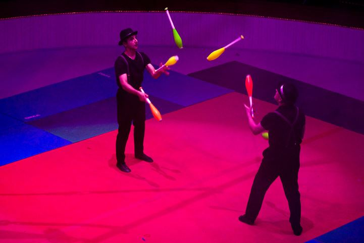
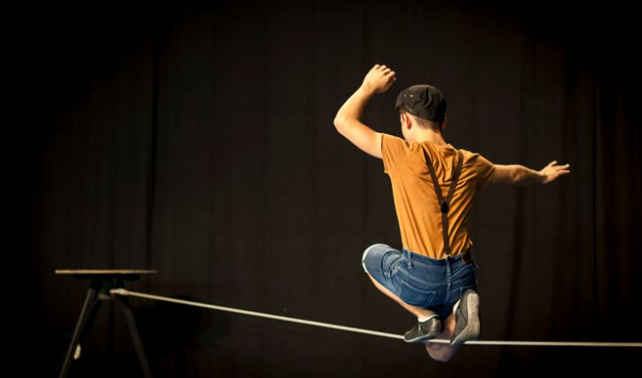

J’ai pratiqué les arts du cirque pendant près de 9 ans. Dans un premier temps j’exerçais cette activité à la Cirk’Mosphère.
Le cirque comporte de nombreuses disciplines différents mais pendant mes 4 années dans cette école ma spécialité était le jonglage.
Source : https://www.la-croix.com/Culture/Actualite/Apprendre-le-jonglage-2015-05-16-1312808
Le but de la discipline est de jongler avec différents types d’objets (balles, massues, …).
J’ai ensuite changer d’école pour pratiquer pendant 5 ans au CIAM.
Un changement d’école a impliqué pour moi un changement de discipline principale, cette fois-ci le fil.
Source :https://www.lentrepot-venelles.fr/%C3%A9v%C3%A8nement/cirque-fil/
Le but de la discipline est de tenir en équilibre sur un fil de fer tendu entre deux plateformes. On peut aussi réaliser des figures en équilibre à une hauteur qui varie.
J’ai aussi dans cette école eu la chance de rejoindre la classe étoile à la suite d’un examen (comparable au conservatoire pour la musique). Cette classe a de nombreuses présentations à préparer et donc cela entraîne un rythme d'entraînement supérieur.
Chaque année, la classe prépare une représentation de fin d’année. Voici une vidéo de l’un de mes spectacles:
Nous avons aussi participé au carnaval d’Aix en Provence en 2016. Voici un extrait de la vidéo où on peut apercevoir le char sur lequel nous étions: (Time code: 0;10 et 1;08)
Source :https://vimeo.com/164097821
Vous pouvez retrouver les vidéos en téléchargements sur la page Téléchargements de mes projets